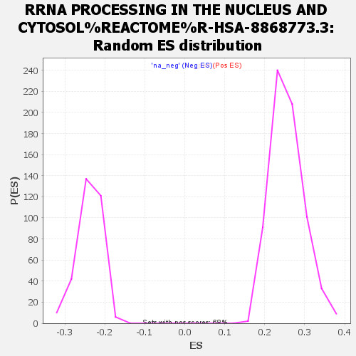

| | | Dataset | vtp_tgf |
| Phenotype | NoPhenotypeAvailable |
| Upregulated in class | na_pos |
| GeneSet | RRNA PROCESSING IN THE NUCLEUS AND CYTOSOL%REACTOME%R-HSA-8868773.3 |
| Enrichment Score (ES) | 0.6088941 |
| Normalized Enrichment Score (NES) | 2.3767495 |
| Nominal p-value | 0.0 |
| FDR q-value | 0.0 |
| FWER p-Value | 0.0 |
Table: GSEA Results Summary
 Fig 1: Enrichment plot: RRNA PROCESSING IN THE NUCLEUS AND CYTOSOL%REACTOME%R-HSA-8868773.3
Fig 1: Enrichment plot: RRNA PROCESSING IN THE NUCLEUS AND CYTOSOL%REACTOME%R-HSA-8868773.3
Profile of the Running ES Score & Positions of GeneSet Members on the Rank Ordered List
| SYMBOL | RANK IN GENE LIST | RANK METRIC SCORE | RUNNING ES | CORE ENRICHMENT | | 1 | TSR3 | 62 | 3.844 | 0.0160 | Yes |
| 2 | DDX49 | 99 | 3.586 | 0.0323 | Yes |
| 3 | RPL36 | 126 | 3.443 | 0.0486 | Yes |
| 4 | BOP1 | 135 | 3.399 | 0.0659 | Yes |
| 5 | EXOSC4 | 155 | 3.314 | 0.0821 | Yes |
| 6 | BUD23 | 180 | 3.230 | 0.0974 | Yes |
| 7 | EXOSC5 | 236 | 3.068 | 0.1097 | Yes |
| 8 | WDR18 | 241 | 3.057 | 0.1255 | Yes |
| 9 | RPL17 | 248 | 3.040 | 0.1411 | Yes |
| 10 | PES1 | 263 | 3.007 | 0.1559 | Yes |
| 11 | EXOSC9 | 312 | 2.906 | 0.1679 | Yes |
| 12 | RRP1 | 342 | 2.855 | 0.1809 | Yes |
| 13 | WDR46 | 375 | 2.800 | 0.1934 | Yes |
| 14 | RPL18 | 418 | 2.734 | 0.2049 | Yes |
| 15 | RPL28 | 458 | 2.638 | 0.2161 | Yes |
| 16 | FAU | 498 | 2.579 | 0.2270 | Yes |
| 17 | RPLP2 | 525 | 2.555 | 0.2386 | Yes |
| 18 | EMG1 | 588 | 2.477 | 0.2474 | Yes |
| 19 | RRP9 | 609 | 2.449 | 0.2589 | Yes |
| 20 | NHP2 | 612 | 2.444 | 0.2716 | Yes |
| 21 | NOB1 | 647 | 2.393 | 0.2818 | Yes |
| 22 | RPL13 | 674 | 2.355 | 0.2924 | Yes |
| 23 | FBL | 711 | 2.314 | 0.3021 | Yes |
| 24 | RPL38 | 746 | 2.273 | 0.3117 | Yes |
| 25 | RPS5 | 783 | 2.238 | 0.3210 | Yes |
| 26 | IMP3 | 812 | 2.203 | 0.3307 | Yes |
| 27 | RPL8 | 840 | 2.177 | 0.3403 | Yes |
| 28 | IMP4 | 870 | 2.151 | 0.3496 | Yes |
| 29 | RPS18 | 913 | 2.117 | 0.3579 | Yes |
| 30 | PELP1 | 948 | 2.095 | 0.3665 | Yes |
| 31 | LAS1L | 1039 | 2.004 | 0.3709 | Yes |
| 32 | RPS26 | 1053 | 1.994 | 0.3805 | Yes |
| 33 | EXOSC3 | 1075 | 1.970 | 0.3894 | Yes |
| 34 | TBL3 | 1168 | 1.899 | 0.3931 | Yes |
| 35 | RPL35 | 1188 | 1.879 | 0.4017 | Yes |
| 36 | RPS16 | 1250 | 1.834 | 0.4071 | Yes |
| 37 | EBNA1BP2 | 1276 | 1.811 | 0.4149 | Yes |
| 38 | BYSL | 1289 | 1.800 | 0.4236 | Yes |
| 39 | RPS14 | 1293 | 1.798 | 0.4328 | Yes |
| 40 | NOC4L | 1297 | 1.796 | 0.4420 | Yes |
| 41 | RPS15 | 1307 | 1.784 | 0.4508 | Yes |
| 42 | RPS9 | 1313 | 1.781 | 0.4598 | Yes |
| 43 | RPL24 | 1396 | 1.725 | 0.4633 | Yes |
| 44 | CSNK1D | 1472 | 1.680 | 0.4670 | Yes |
| 45 | SENP3 | 1480 | 1.674 | 0.4753 | Yes |
| 46 | RPLP1 | 1493 | 1.667 | 0.4832 | Yes |
| 47 | RPL18A | 1626 | 1.573 | 0.4824 | Yes |
| 48 | RPL13A | 1751 | 1.497 | 0.4818 | Yes |
| 49 | RPL29 | 1786 | 1.471 | 0.4872 | Yes |
| 50 | CSNK1E | 1788 | 1.469 | 0.4949 | Yes |
| 51 | NOP58 | 1848 | 1.422 | 0.4983 | Yes |
| 52 | UTP14A | 1887 | 1.403 | 0.5031 | Yes |
| 53 | NOL6 | 1903 | 1.393 | 0.5094 | Yes |
| 54 | RPL26 | 1926 | 1.381 | 0.5151 | Yes |
| 55 | RPS28 | 1950 | 1.369 | 0.5207 | Yes |
| 56 | RPP25 | 1971 | 1.353 | 0.5265 | Yes |
| 57 | RPL10A | 1976 | 1.349 | 0.5333 | Yes |
| 58 | RPS2 | 2237 | 1.228 | 0.5220 | Yes |
| 59 | RPL23 | 2255 | 1.222 | 0.5272 | Yes |
| 60 | RPL30 | 2266 | 1.216 | 0.5329 | Yes |
| 61 | ISG20L2 | 2314 | 1.192 | 0.5360 | Yes |
| 62 | UBA52 | 2338 | 1.184 | 0.5406 | Yes |
| 63 | RPL26L1 | 2398 | 1.156 | 0.5427 | Yes |
| 64 | RPS21 | 2502 | 1.115 | 0.5415 | Yes |
| 65 | NOL12 | 2507 | 1.114 | 0.5471 | Yes |
| 66 | MPHOSPH6 | 2542 | 1.101 | 0.5505 | Yes |
| 67 | EXOSC7 | 2543 | 1.100 | 0.5563 | Yes |
| 68 | DHX37 | 2586 | 1.080 | 0.5591 | Yes |
| 69 | RPS8 | 2629 | 1.057 | 0.5618 | Yes |
| 70 | RPL36AL | 2688 | 1.029 | 0.5632 | Yes |
| 71 | RPS19 | 2742 | 1.007 | 0.5649 | Yes |
| 72 | RPS3 | 2755 | 1.000 | 0.5693 | Yes |
| 73 | RPP38 | 2906 | 0.943 | 0.5640 | Yes |
| 74 | RPL10 | 2921 | 0.935 | 0.5680 | Yes |
| 75 | RPL27A | 3010 | 0.903 | 0.5667 | Yes |
| 76 | RPL37A | 3041 | 0.892 | 0.5693 | Yes |
| 77 | TRMT112 | 3216 | 0.827 | 0.5618 | Yes |
| 78 | RRP7A | 3226 | 0.824 | 0.5655 | Yes |
| 79 | NOP56 | 3252 | 0.815 | 0.5681 | Yes |
| 80 | RPL32 | 3266 | 0.812 | 0.5715 | Yes |
| 81 | RPS11 | 3299 | 0.800 | 0.5735 | Yes |
| 82 | RPS27 | 3332 | 0.786 | 0.5754 | Yes |
| 83 | RPP40 | 3375 | 0.774 | 0.5766 | Yes |
| 84 | RIOK1 | 3385 | 0.770 | 0.5800 | Yes |
| 85 | RPL31 | 3425 | 0.756 | 0.5813 | Yes |
| 86 | EXOSC10 | 3443 | 0.750 | 0.5841 | Yes |
| 87 | SNU13 | 3499 | 0.734 | 0.5842 | Yes |
| 88 | RPL27 | 3547 | 0.723 | 0.5848 | Yes |
| 89 | RPL14 | 3593 | 0.710 | 0.5854 | Yes |
| 90 | FTSJ3 | 3619 | 0.702 | 0.5874 | Yes |
| 91 | RPL35A | 3629 | 0.698 | 0.5905 | Yes |
| 92 | EXOSC1 | 3649 | 0.692 | 0.5928 | Yes |
| 93 | LTV1 | 3710 | 0.670 | 0.5922 | Yes |
| 94 | UTP3 | 3714 | 0.669 | 0.5955 | Yes |
| 95 | EXOSC2 | 3744 | 0.661 | 0.5970 | Yes |
| 96 | RPL3 | 3812 | 0.638 | 0.5958 | Yes |
| 97 | RPL37 | 3818 | 0.637 | 0.5988 | Yes |
| 98 | RPS24 | 3837 | 0.633 | 0.6009 | Yes |
| 99 | RPL4 | 3843 | 0.631 | 0.6039 | Yes |
| 100 | RPS17 | 3891 | 0.617 | 0.6039 | Yes |
| 101 | RPS25 | 3905 | 0.614 | 0.6062 | Yes |
| 102 | RCL1 | 3914 | 0.610 | 0.6089 | Yes |
| 103 | MPHOSPH10 | 4027 | 0.580 | 0.6043 | No |
| 104 | RPLP0 | 4147 | 0.544 | 0.5990 | No |
| 105 | UTP11 | 4211 | 0.527 | 0.5975 | No |
| 106 | RPS15A | 4303 | 0.503 | 0.5939 | No |
| 107 | RPL19 | 4392 | 0.481 | 0.5904 | No |
| 108 | DKC1 | 4411 | 0.477 | 0.5917 | No |
| 109 | RPL41 | 4532 | 0.454 | 0.5859 | No |
| 110 | RPL22L1 | 4597 | 0.439 | 0.5838 | No |
| 111 | RPL12 | 4609 | 0.438 | 0.5853 | No |
| 112 | NIP7 | 4611 | 0.438 | 0.5876 | No |
| 113 | RPS20 | 4701 | 0.413 | 0.5837 | No |
| 114 | PWP2 | 4739 | 0.404 | 0.5832 | No |
| 115 | RPP30 | 4807 | 0.389 | 0.5807 | No |
| 116 | NOP14 | 4935 | 0.360 | 0.5739 | No |
| 117 | NAT10 | 5035 | 0.340 | 0.5689 | No |
| 118 | NCL | 5049 | 0.338 | 0.5698 | No |
| 119 | GAR1 | 5125 | 0.326 | 0.5664 | No |
| 120 | RPL11 | 5143 | 0.321 | 0.5669 | No |
| 121 | RPL21 | 5275 | 0.295 | 0.5595 | No |
| 122 | RPL34 | 5292 | 0.293 | 0.5600 | No |
| 123 | PDCD11 | 5484 | 0.256 | 0.5483 | No |
| 124 | RPL7A | 5503 | 0.253 | 0.5484 | No |
| 125 | RPL6 | 5612 | 0.234 | 0.5422 | No |
| 126 | PNO1 | 5615 | 0.234 | 0.5433 | No |
| 127 | RPS10 | 5647 | 0.228 | 0.5424 | No |
| 128 | UTP18 | 5681 | 0.222 | 0.5413 | No |
| 129 | DCAF13 | 5808 | 0.199 | 0.5337 | No |
| 130 | RPS6 | 5854 | 0.190 | 0.5316 | No |
| 131 | XRN2 | 6061 | 0.160 | 0.5184 | No |
| 132 | TSR1 | 6065 | 0.160 | 0.5190 | No |
| 133 | RPL39L | 6140 | 0.150 | 0.5148 | No |
| 134 | UTP4 | 6215 | 0.141 | 0.5105 | No |
| 135 | WDR3 | 6403 | 0.119 | 0.4983 | No |
| 136 | EXOSC6 | 6426 | 0.116 | 0.4974 | No |
| 137 | RPL23A | 6486 | 0.110 | 0.4939 | No |
| 138 | RPL15 | 6499 | 0.108 | 0.4937 | No |
| 139 | RPS29 | 6560 | 0.100 | 0.4901 | No |
| 140 | RPS27A | 6702 | 0.082 | 0.4809 | No |
| 141 | RPS4X | 6780 | 0.072 | 0.4760 | No |
| 142 | RPL5 | 6864 | 0.063 | 0.4707 | No |
| 143 | NOP10 | 6997 | 0.047 | 0.4619 | No |
| 144 | RIOK3 | 7173 | 0.028 | 0.4501 | No |
| 145 | RPS13 | 7187 | 0.027 | 0.4493 | No |
| 146 | WDR43 | 7193 | 0.026 | 0.4491 | No |
| 147 | RPSA | 7214 | 0.024 | 0.4479 | No |
| 148 | RPS12 | 7344 | 0.009 | 0.4391 | No |
| 149 | WDR75 | 7460 | -0.000 | 0.4313 | No |
| 150 | RPS27L | 7560 | -0.010 | 0.4245 | No |
| 151 | RRP36 | 7617 | -0.016 | 0.4208 | No |
| 152 | RPS7 | 7907 | -0.047 | 0.4013 | No |
| 153 | GNL3 | 7999 | -0.057 | 0.3954 | No |
| 154 | NOL11 | 8459 | -0.106 | 0.3645 | No |
| 155 | DDX47 | 8621 | -0.126 | 0.3542 | No |
| 156 | TEX10 | 8858 | -0.160 | 0.3389 | No |
| 157 | DIMT1 | 8909 | -0.167 | 0.3364 | No |
| 158 | MTREX | 8977 | -0.174 | 0.3327 | No |
| 159 | RPL7 | 8998 | -0.177 | 0.3323 | No |
| 160 | RBM28 | 9142 | -0.199 | 0.3235 | No |
| 161 | NOL9 | 9183 | -0.203 | 0.3219 | No |
| 162 | DIS3 | 9322 | -0.221 | 0.3136 | No |
| 163 | UTP25 | 9325 | -0.221 | 0.3146 | No |
| 164 | RPP14 | 9418 | -0.233 | 0.3095 | No |
| 165 | DDX21 | 9434 | -0.235 | 0.3098 | No |
| 166 | RPS4Y1 | 9528 | -0.247 | 0.3047 | No |
| 167 | THUMPD1 | 9624 | -0.262 | 0.2996 | No |
| 168 | EXOSC8 | 9683 | -0.270 | 0.2970 | No |
| 169 | DDX52 | 9885 | -0.300 | 0.2849 | No |
| 170 | RPL36A | 9924 | -0.307 | 0.2839 | No |
| 171 | WDR36 | 10021 | -0.324 | 0.2790 | No |
| 172 | UTP20 | 10132 | -0.343 | 0.2733 | No |
| 173 | UTP15 | 10218 | -0.357 | 0.2694 | No |
| 174 | C1D | 10399 | -0.392 | 0.2591 | No |
| 175 | RPL22 | 10549 | -0.422 | 0.2512 | No |
| 176 | KRR1 | 10588 | -0.429 | 0.2508 | No |
| 177 | BMS1 | 10889 | -0.490 | 0.2329 | No |
| 178 | RIOK2 | 11007 | -0.515 | 0.2276 | No |
| 179 | ERI1 | 11213 | -0.564 | 0.2165 | No |
| 180 | RPS23 | 11222 | -0.565 | 0.2189 | No |
| 181 | WDR12 | 11642 | -0.668 | 0.1938 | No |
| 182 | UTP6 | 11789 | -0.711 | 0.1876 | No |
| 183 | FCF1 | 11932 | -0.753 | 0.1818 | No |
| 184 | HEATR1 | 12235 | -0.849 | 0.1656 | No |
| 185 | RPL39 | 12625 | -0.997 | 0.1443 | No |
| 186 | RPS3A | 12628 | -0.998 | 0.1494 | No |
Table: GSEA details [plain text format]

Fig 2: RRNA PROCESSING IN THE NUCLEUS AND CYTOSOL%REACTOME%R-HSA-8868773.3: Random ES distribution
Gene set null distribution of ES for RRNA PROCESSING IN THE NUCLEUS AND CYTOSOL%REACTOME%R-HSA-8868773.3